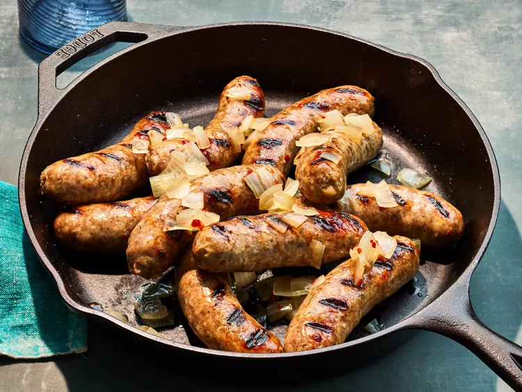

Beer Brats

Credit: DOTDASH MEREDITH FOOD STUDIOS
Description
These awesome brats are simmered in beer with onions and spices to make them bursting with flavor before finishing them off on the grill. Place the grilled brats in hot dog rolls, and top them with the tender onions and mustard, or serve them alongside German potato salad.
Ingredients
- 4 (12-ounce) cans beer
- 1 large onion, thinly sliced
- 10 bratwurst
- 2 teaspoons red pepper flakes or to taste
- 1 teaspoon garlic powder or to taste
- 1 teaspoon salt
- ½ teaspoon ground black pepper
Steps
- Gather all ingredients.
- Combine beer and onion slices in a large pot; bring to a boil.
- Add bratwurst, pepper flakes, garlic powder, salt, and pepper to beer and onion mixture. Reduce heat to medium and cook for 10 to 12 minutes.
- Meanwhile, preheat an outdoor grill for medium-high heat and lightly oil the grate.
- Transfer bratwurst to a plate. Reduce heat to low and let onions simmer until needed.
- Cook bratwurst on the preheated grill, turning occasionally to get char marks, until no longer pink in the middle, 5 to 10 minutes. An instant-read thermometer inserted into the center should read at least 160 degrees F (70 degrees C).
- Serve bratwurst with onions.
Home